Movie Releases By Score
2501.
Casino
Release Date:
November 22, 1995

A in-depth look at the operation of a Las Vegas casino in the 1970s, Scorsese's film chronicles the rise and fall of casino manager Ace Rothstein (Robert De Niro).
|
|
2502.
Le Week-End
Release Date:
March 14, 2014
Nick (Jim Broadbent) and Meg (Lindsay Duncan), a long-married British couple, revisit Paris for the first time since their honeymoon in an attempt to rekindle their relationship. During a two-day escapade, diffident, wistful Nick and demanding, take-charge Meg careen from harmony to disharmony to resignation and back again as they take stock of half a lifetime of deep tenderness—and even deeper regret. A surprise invitation from Nick’s old friend Morgan (Jeff Goldblum), an amusingly boorish American academic with a fancy Parisian address, soon leads them to an unexpectedly hopeful vision of what their love and marriage might still become.
|
|
| 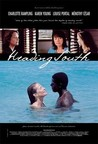 |
2503.
Heading South
Release Date:
July 7, 2006
On the sun drenched island of Haiti in the '70s, foreigners idle away their vacations in the palm-fringed paradise of the beach hotels. Brenda (Young), Ellen (Rampling) and Sue (Portal), three North American women, converge on the island looking for flirtation, relaxation and respite from their colorless jobs and marriages. They find what they are looking for in Legba (Cesar), an enigmatic local Adonis whose beauty and passion has them enthralled. It is this passion that will lead them away from the gilded cage of tourism and will open their eyes to the poverty stricken and dangerous world of Haiti. (Celluloid Dreams)
|
2504.
Exiled
Release Date:
August 31, 2007
The time is 1998. The setting is Macau. Every living soul jumps at every chance to make quick money before the Portuguese colony ushers in a new era under the Chinese rule. For the jaded hit men, they wonder where this journey will end. Against this background of fin-de-siècle malaise come two hit men from Hong Kong sent to take out a renegade member trying to turn over a new leaf with his wife and newborn baby. They soon find themselves in the throes of a dilemma when two of their former associates also show up, intent on thwarting them at every cost. (Magnolia Pictures)
|
|
| 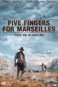 |
2505.
Five Fingers For Marseilles
Release Date:
September 7, 2018
A member of the Five Fingers returns to colonial Marseilles after fleeing police aggression two decades before, and finds the town under a new threat.
|

|
2506.
Gilbert
Release Date:
November 3, 2017
Gilbert is a wildly funny and unexpectedly poignant portrait of the life and career of one of comedy's most iconic figures, Gilbert Gottfried.
|

|
2507.
What's Eating Gilbert Grape
Release Date:
March 4, 1994

After his father's death, Gilbert (Johnny Depp) has to care for his mentally disabled brother, Arnie (Leonardo DiCaprio), and his morbidly obese mother. The arrangement is suddenly challenged when love walks into his life.
|

|
2508.
Jim: The James Foley Story
Release Date:
January 28, 2016
An in-depth look at the life and work of American journalist James Foley, who was killed by ISIS terrorists in 2014.
|
| 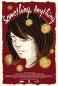 |
2509.
Something, Anything
Release Date:
January 9, 2015
When a tragedy shatters her plans for domestic bliss, a seemingly typical Southern newlywed (Ashley Shelton) gradually transforms into a spiritual seeker, quietly threatening the closest relationships around her.
|

|
2510.
I'm Glad My Mother Is Alive
Release Date:
September 2, 2011
Based on a true story, I'm Glad My Mother is Alive explores childhood trauma and its dire consequences on adult life. Given up for adoption as a toddler, troubled teenager Thomas becomes obsessed with tracking down his birth mother. After years of searching Thomas finds her single, with a small child, living in a nearby suburb and introduces himself. Traumatized by years of emptiness and longing for his mother, he starts an ambiguous relationship with her (part courtship, part obsession) which slowly drives him to an act of madness. (Strand Releasing)
|
2511.
Kung Fu Panda
Release Date:
June 6, 2008

Enthusiastic, big and a little clumsy, Po is the biggest fan of Kung Fu around…which doesn’t exactly come in handy while working every day in his family’s noodle shop. Unexpectedly chosen to fulfill an ancient prophecy, Po’s dreams become reality when he joins the world of Kung Fu and studies alongside his idols—the legendary fighters Tigress, Crane, Mantis, Viper and Monkey—under the leadership of their guru, Master Shifu. But before they know it, the vengeful and treacherous snow leopard Tai Lung is headed their way, and it’s up to Po to defend everyone from the oncoming threat. Can he turn his dreams of becoming a Kung Fu master into reality? Po puts his heart-and his girth-into the task, and the unlikely hero ultimately finds that his greatest weaknesses turn out to be his greatest strengths. [Dreamworks]
|
|
| 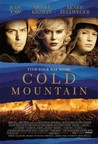 |
2512.
Cold Mountain
Release Date:
December 25, 2003
Based on one of the most acclaimed novels in recent memory, Cold Mountain sets off on a true American odyssey through a time that saw some of the greatest ferocity -- and heroism -- the nation has ever known. (Miramax)
|

|
2513.
The Commitments
Release Date:
September 13, 1991
When Jimmy Rabbitte wants to start a band, he has open auditions at his house.
|

|
2514.
Me and Orson Welles
Release Date:
November 25, 2009
Based in real theatrical history, Me and Orson Welles is a romantic, coming-of-age story about a teenage actor who lucks into a role in "Julius Caesar" as it's being re-imagined by a brilliant, impetuous young director named Orson Welles at his newly-founded Mercury Theater in NYC, 1937. (Freestyle Releasing)
|
2515.
For the Bible Tells Me So
Release Date:
October 5, 2007
Through the experiences of five very normal, very Christian, very American families -- including those of former House Majority Leader Richard Gephardt and Episcopalian Bishop Gene Robinson -- we discover how insightful people of faith handle the realization of having a gay child. Informed by such respected voices as Bishop Desmond Tutu, Harvard's Peter Gomes, Orthodox Rabbi Steve Greenberg and Reverend Jimmy Creech, For the Bible Tells Me So offers healing, clarity and understanding to anyone caught in the cross-hairs of scripture and sexual identity. (First Run Pictures)
|
|
| 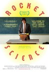 |
2516.
Rocket Science
Release Date:
August 10, 2007
A teenager tackles the mysteries of life, love and public speaking in Rocket Science, a wry comedy of adolescent angst. Life is not easy for teenager Hal Hefner. His parents have split, his older brother is an obsessive-compulsive and he has an unpredictable stutter. Given that his active mind and quick wit tend to be obscured by his problematic voice, Hal is not an obvious candidate for his school's high-powered debate team. So when the star of debate team, Ginny Ryerson, asks him to be her partner, Hal rises to the occasion, and in doing so he scores a victory that has nothing to do with winning a debate, but everything to do with finding his voice. (Picturehouse Entertainment)
|
| 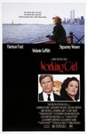 |
2517.
Working Girl
Release Date:
December 23, 1988
Ambitious secretary Tess McGill (Melanie Griffith) makes her up the corporate ladder with a little creative deception by "taking over" when her boss Katherine Parker (Sigourney Weaver) breaks her leg on a ski trip.
|
2518.
The Pirates! Band of Misfits
Release Date:
April 27, 2012
In The Pirates! Band of Misfits, the luxuriantly bearded Pirate Captain – a boundlessly enthusiastic, if somewhat less-than-successful, terror of the High Seas. With a rag-tag crew at his side, and seemingly blind to the impossible odds stacked against him, the Captain has one dream: to beat his bitter rivals Black Bellamy and Cutlass Liz to the much coveted Pirate Of The Year Award. It’s a quest that takes our heroes from the shores of exotic Blood Island to the foggy streets of Victorian London. Along the way they battle a diabolical queen and team up with a haplessly smitten young scientist, but never lose sight of what a pirate loves best: adventure! (Columbia Pictures)
|
|

|
2519.
The Price of Sugar
Release Date:
September 28, 2007
The Price of Sugar follows a charismatic Spanish priest, Father Christopher Hartley, as he organizes some of this hemisphere's poorest people to challenge powerful interests profiting from their work. When he arrives in the Dominican Republic, he's warned against entering the sugar plantations where most of his parishioners live. Breaking a centuries-old taboo, he discovers shocking examples of modern-day slavery intrinsic to the global sugar trade. (Uncommon Productions)
|

|
2520.
Mad Max
Release Date:
February 15, 1980
Max Rockatansky (Mel Gibson), an Australian policeman, sets out to avenge his wife and son.
|
2521.
Harlan: In the Shadow of Jew Suess
Release Date:
March 3, 2010
Though almost forgotten today, Veit Harlan was one of Nazi Germany’s most notorious filmmakers. Millions all across occupied Europe saw his films, the most perfidious of which was the treacherous anti-Semitic propaganda film Jew Süss—required viewing for all SS members. An unrepentant and blindly obsessive craftsman, no figure—save for Leni Riefenstahl—is as closely associated with the cinema of the Holocaust years as that of Joseph Goebbels’ top director. (Harlan’s 1945 epic Kolberg was the basis for Inglourious Basterds’ pivotal film-within-a-film Stolz Der Nation.) Harlan was also the only artist from the Nazi era to be charged with war crimes. (Zeigeist Films)
|
|

|
2522.
Milford Graves Full Mantis
Release Date:
July 13, 2018
Milford Graves Full Mantis is the first ever feature-length portrait of renowned percussionist Milford Graves, exploring his kaleidoscopic creativity and relentless curiosity.
|
2523.
Uncle Howard
Release Date:
November 18, 2016
Uncle Howard is an intertwining tale of past and present––the story of filmmaker Howard Brookner, whose work captured the late 70s and early 80s cultural revolution, and his nephew’s personal journey 25 years later to discover his uncle’s films and the legacy of a life cut short by the plague of AIDS.
|
|
|
|
2524.
China Blue
Release Date:
January 26, 2007
This documentary is a powerful and poignant journey into the harsh world of sweatshop workers. (Bullfrog Films)
|

|
2525.
Bill Nye: Science Guy
Release Date:
October 27, 2017
Bill Nye is a man on a mission: to stop the spread of anti-scientific thinking across the world. The former star of the popular kids show "Bill Nye The Science Guy" is now the CEO of The Planetary Society, an organization founded by Bill's mentor Carl Sagan, where he's launching a solar propelled spacecraft into the cosmos and advocating for the importance of science, research, and discovery in public life. With intimate and exclusive access —as well as plenty of wonder and whimsy — this behind-the-scenes portrait of Nye follows him as he takes off his Science Guy lab coat and takes on those who deny climate change, evolution, and a science-based world view.
|

|
2526.
The Forgiveness of Blood
Release Date:
February 24, 2012
Nik is a carefree teenager in a small town with a crush on the school beauty and ambitions to start his own internet café. His world is suddenly up-ended when his father and uncle become entangled in a land dispute that leaves a fellow villager murdered. According to a centuries-old code of law, this entitles the dead man's family to take the life of a male from Nik's family as retribution. His uncle in jail and his father in hiding, Nik is the prime target and confined to the home while his younger sister Rudina is forced to leave school and take over their father's business. (Sundance Selects)
|
| 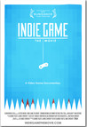 |
2527.
Indie Game: The Movie
Release Date:
May 18, 2012
After two years of painstaking work, designer Edmund McMillen and programmer Tommy Refenes await the release of their first major game for Xbox, Super Meat Boy—the adventures of a skinless boy in search of his girlfriend, who is made of bandages. At PAX, a major video-game expo, developer Phil Fish unveils his highly anticipated, four-years-in-the-making FEZ. Jonathan Blow considers beginning a new game after creating Braid, one of the highest-rated games of all time. First-time filmmaking duo Lisanne Pajot and James Swirsky capture the emotional journey of these meticulously obsessive artists who devote their lives to their interactive art. Four developers, three games, and one ultimate goal— to express oneself through a video game. (BlinkWorks Media)
|

|
2528.
Obscene
Release Date:
September 26, 2008
Barney Rosset is the greatest American publisher of the twentieth century and the most influential cultural figure that you haven’t heard of. Under Rosset, Grove Press and Evergreen Review fought decisive battles, including many before the state and federal supreme courts, defeated legal censorship, and opened American life to new and dangerous currents of freedom. But Rosset’s public fight against hypocrisy and injustice is inextricable from his tumultuous personal life: the same unyeilding, quixotic, restless energy that upended centuries of law brought Rosset perilously close to destruction. (Arthouse Films)
|
2529.
Declaration of War
Release Date:
January 27, 2012
Roméo and Juliette are two young actors. They fall in love at first sight, move in together and make a baby. A love story and the founding of a home like millions of others. Except that their little boy, Adam, behaves abnormally. The young parents try hard to persuade themselves that everything is okay but, with the passing of time, they cannot delude themselves anymore; their son has problems. Their fears are unfortunately confirmed: Adam suffers from a malignant brain tumor. From then on, they declare war. A war against illness. A war against death. A war against despair. (Wild Bunch Distribution)
|
|

|
2530.
All Things Must Pass
Release Date:
October 16, 2015
Established in 1960, Tower Records was once a retail powerhouse with two hundred stores, in thirty countries, on five continents. From humble beginnings in a small-town drugstore, Tower Records eventually became the heart and soul of the music world, and a powerful force in the music industry. In 1999, Tower Records made $1 billion. In 2006, the company filed for bankruptcy. What went wrong? Everyone thinks they know what killed Tower Records: The Internet. But that's not the story.
|

|
2531.
The Clan
Release Date:
March 18, 2016
On the surface the Puccios live like most families. Arquímedes (Guillermo Francella) presides over a modest household where his wife, sons, and daughters gather most evenings over home cooked meals to discuss their days. Eldest son Alejandro (Peter Lanzani) is a star rugby player who is manipulated into helping his father carry out the meticulously planned abductions. But when kidnapping turns to murder, Alejandro must finally face the truth that his father, his hero, is a cold-blooded killer.
|
2532.
Kill Zone 2
Release Date:
May 13, 2016
When an undercover cop gets too close to revealing the mastermind of a drug syndicate, his cover is blown. Double-crossed and under a false identity, he's thrown into a Thai prison, where a guard discovers the inmate - claiming he's a cop - is a bone marrow match for his dying daughter...and his warden may have an even deadlier operation hidden within the prison walls. [Well Go USA]
|
|

|
2533.
The Corporation
Release Date:
June 4, 2004
This feature documentary analyzes the very nature of the corporate institution, its impacts on our planet, and what people are doing in response. (Zeitgeist Films)
|

|
2534.
L.I.E.
Release Date:
September 7, 2001
L.I.E. is about a boy who, in losing just about everything and everyone he has in the space of a single week, finds himself. (Lot 47 Films)
|

|
2535.
Our Lady of the Assassins
Release Date:
September 7, 2001
An exploration of morality and mortality in Medellín, Colombia. (Paramount Classics)
|

|
2536.
Titanic Town
Release Date:
September 1, 2000
In 1972, a Belfast mother (Walters) becomes involved in a woman's peace group which causes her family trouble with IRA sympathizers.
|

|
2537.
Space Cowboys
Release Date:
August 4, 2000
In the 1950's, one of the first satellites was launched. Today, it is malfunctioning and threatening the Earth, and the original astronaut (Eastwood) is asked to go and do repairs. He wants three old air force buddies to go with him into space for the last time and fix it.
|
| 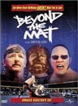 |
2538.
Beyond the Mat
Release Date:
March 17, 2000
Documentry focusing on the lives of professional wrestlers. Gives the viewer a behind-the-scenes look at how their sport is not fake.
|

|
2539.
Wonder Boys
Release Date:
February 25, 2000
Grady Tripp (Douglas) is a 50-ish English professor who hasn't had a thing published in years -- not since he wrote his award-winning Great American Novel seven years ago. It's hardly surprising, then that his college's annual literary festival fills the former wonder boy with more than his usual quota of self-doubt and anxiety. This festival weekend, however, proves even worse than he could have imagined as he finds himself reeling from one misadventure to another in the company of a new wonder boy, his most gifted writing student James Leer (Maguire). (Paramount Pictures)
|
2540.
Not One Less
Release Date:
February 18, 2000

In a remote mountain village, the teacher (Gao) must leave for a month to care for his mother. The mayor can find only a 13-year old girl (Wei) to substitute, even though she is only a few years older than her students.
|
|
2541.
Spider-Man: Homecoming
Release Date:
July 7, 2017
A young Peter Parker (Tom Holland) begins to navigate his newfound identity as the web-slinging super hero. Thrilled by his experience with the Avengers, Peter returns home, where he lives with his Aunt May (Marisa Tomei), under the watchful eye of his new mentor Tony Stark (Robert Downey, Jr.). Peter tries to fall back into his normal daily routine – distracted by thoughts of proving himself to be more than just your friendly neighborhood Spider-Man – but when the Vulture (Michael Keaton) emerges as a new villain, everything that Peter holds most important will be threatened.
|
|

|
2542.
Prince Avalanche
Release Date:
August 9, 2013
Two highway road workers spend the summer of 1988 away from their city lives. The isolated landscape becomes a place of misadventure as the men find themselves at odds with each other and the women they left behind.
|

|
2543.
The Grandmaster
Release Date:
August 23, 2013
The Grandmaster is an epic action feature inspired by the life and times of legendary martial-arts master Ip Man. The story spans the tumultuous Republican era that followed the fall of Chinaâ
|
2544.
The Scandal
Release Date:
October 13, 2004
Based on the novel Les Liaisons Dangereuses, Untold Scandal is set in aristocratic 18th century Korea at the end of the Chosun Dynasty. (Kino International)
|
|

|
2545.
Mr. Roosevelt
Release Date:
October 27, 2017
Emily Martin is a struggling 20-something who moved to Los Angeles to pursue a career in comedy after graduating college in Austin, Texas. When a loved one falls sick, she returns to Austin and runs into her ex-boyfriend, as well as his amazing and intimidating new girlfriend. Low on funds and stuck in Texas for the weekend, Emily stays with the two of them in her old, but miraculously remodeled house. She quickly finds her way into the circle of a local female badass who shows Emily a good time and tries to keep her from spinning out as she goes toe-to-toe with the new girlfriend, all the ways her ex has changed, and ultimately, her own choices and guilt about leaving the past behind.
|
2546.
The Ivory Game
Release Date:
November 4, 2016
Wildlife activists in take on poachers in an effort to end illegal ivory trade in Africa.
|
|
2547.
Audrie & Daisy
Release Date:
September 23, 2016
Two different girls sexually assaulted on two different nights, in two different towns. Audrie & Daisy takes a hard look at the issues faced by America's teenagers who are coming of age in the new world of social media bullying, spun wildly out of control.
|
|

|
2548.
Little Feet
Release Date:
December 12, 2014
Determined to set their pet goldfish free, Lana and Nico embark on a magical urban odyssey from their Los Angeles home to the ocean. Their adventure, seen through the eyes of the brother/sister team, is filled with an array of wild and sometimes frightening encounters. [Factory 25]
|

|
2549.
The Killing of a Sacred Deer
Release Date:
October 20, 2017
Dr. Steven Murphy (Colin Farrell) is a renowned cardiovascular surgeon presiding over a spotless household with his ophthalmologist wife Anna (Nicole Kidman) and their two exemplary children, 12-year-old Bob (Sunny Suljic) and 14-year-old Kim (Raffey Cassidy). Lurking at the margins of his idyllic suburban existence is Martin (Barry Keoghan), a fatherless teen who Steven has covertly taken under his wing. As Martin begins insinuating himself into the family’s life in ever-more unsettling displays, the full scope of his intent becomes menacingly clear when he confronts Steven with a long-forgotten transgression that will shatter the Murphy family's domestic bliss.
|

|
2550.
Results
Release Date:
May 29, 2015
Recently divorced, newly rich, and utterly miserable, Danny (Kevin Corrigan) would seem to be the perfect test subject for a definitive look at the relationship between money and happiness. Danny’s well-funded ennui is interrupted by a momentous trip to the local gym, where he meets self-styled guru/owner Trevor (Guy Pearce) and irresistibly acerbic trainer Kat (Cobie Smulders). Soon, their three lives are inextricably knotted, both professionally and personally. [Magnolia Pictures]
|
| 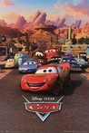 |
2551.
Cars
Release Date:
June 9, 2006
This is a fast-paced comedy adventure set inside the world of cars. Fueled with plenty of humor, action, heartfelt drama and amazing new technical feats, Cars is a high octane delight for moviegoers of all ages. [Disney]
|
2552.
Appropriate Behavior
Release Date:
January 16, 2015
For Shirin (Desiree Akhavan), being part of a perfect Persian family isn’t easy. Acceptance eludes her from all sides: her family doesn’t know she’s bisexual, and her ex-girlfriend, Maxine, can’t understand why she doesn’t tell them. Even the six-year-old boys in her moviemaking class are too ADD to focus on her for more than a second. Following a family announcement of her brother’s betrothal to a parentally approved Iranian prize catch, Shirin embarks on a private rebellion involving a series of pansexual escapades, while trying to decipher what went wrong with Maxine. [Gravitas Ventures]
|
|
2553.
Witching and Bitching
Release Date:
June 13, 2014
When their bank heist doesn’t go according to plan, José and Tony find themselves in possession of hostages and speeding through the mountains of Spain, hoping to quietly slip over the border. Not wanting to give up his custody days to his ex-wife, José has also brought his son along, for both the robbery and the ride. Little do they know that this is only the beginning of their troubles. When they decide to make a stop in a small tavern in the Basque countryside, the group encounters a series of local wackos. Falling victim to a mysterious spell, they soon find themselves the honored guests of a fractured family of witches who are preparing for an ancient ritual. More colorful characters begin to enter the picture, including a pair of hapless cops hot on the trail, a defecting vixen witch and José’s controlling ex-wife. [IFC Films]
|
|
2554.
Spider-Man
Release Date:
May 3, 2002
Peter Parker (Maguire), after being bitten by a genetically altered spider, becomes Spider-Man, a hero of superhuman strength with the ability to cling to any surface. He dedicates himself to a life of fighting crime, while living a double life as a superhero and working student. (Sony)
|
|
2555.
Zombieland
Release Date:
October 2, 2009
Columbus has made a habit of running from what scares him. Tallahassee doesn't have fears. If he did, he'd kick their ever-living ass. In a world overrun by zombies, these two are perfectly evolved survivors. But now, they're about to stare down the most terrifying prospect of all: each other. (Sony Pictures)
|
|

|
2556.
Alias Betty
Release Date:
September 13, 2002
As novelist Betty Fisher (Kiberlain) starts becoming darkly depressed after the death of her young son, her plotting mother arranges to have another little boy kidnapped to take his place.
|
2557.
Red Satin
Release Date:
August 23, 2002
A widowed Tunisian seamstress takes an unlikely journey of self-discovery in writer-director Raja Amari's sumptuous and sensual film. (Zeitgeist Films)
|
|
2558.
The Son's Room
Release Date:
January 25, 2002
An Italian psychoanalyst and his family must overcome their grief following the death of their son in a freak diving accident that changes their lives forever.
|
|
2559.
Julieta
Release Date:
December 21, 2016
Julieta lives in Madrid with her daughter Antía. They both suffer in silence over the loss of Xoan, Antía’s father and Julieta’s husband. But at times grief doesn’t bring people closer, it drives them apart.
When Antía turns eighteen she abandons her mother, without a word of explanation. Julieta looks for her in every possible way, but all she discovers is how little she knows of her daughter.
|
|

|
2560.
The Lookout
Release Date:
March 30, 2007
This intelligent crime drama is centered around Chris (Gordon-Levitt), a once promising high school athlete whose life is turned upside down following a tragic accident. As he tries to maintain a normal life, he takes a job as a janitor at a bank when he ultimately finds himself caught up in a planned heist. (Miramax Films)
|

|
2561.
Whores' Glory
Release Date:
April 20, 2012
Whores' Glory is an explicit and unflinching exposé of global prostitution. In Bangkok, Thailand, women punch a clock and wait for clients in a brightly lit glass box; in the red-light district of Faridpur, Bangladesh, a madam haggles over the price of a teenage girl; and in the border town of Reynosa, Mexico, crack-addicted women pray to a deity named Lady Death. (Kino Lorber)
|
2562.
Big
Release Date:
June 3, 1988
At a carnival, young Josh Baskin wishes he was big only to awake the next morning and discover he is! With the help of his friend Billy, Josh lands a job at a toy company. But the more he experiences being an adult, the more Josh longs for the simple joys of childhood. [Twentieth Century Fox]
|
|
2563.
Girl
Release Date:
March 15, 2019
Lara is a 15-year-old girl, born in the body of a boy, who dreams of becoming a ballerina.
|
|
| 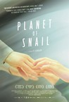 |
2564.
Planet of Snail
Release Date:
July 25, 2012
Young-Chan is an accomplished poet who can no longer hear or see. He communicates with his wife Soon-Ho through finger braille, a unique form of communication where words are tapped on each other's hands. They rely on one another completely; even simple domestic tasks require complex collaboration and everyday moments that most of us hardly notice become tender shared experiences. (Cinema Guild)
|

|
2565.
The Hangover
Release Date:
June 5, 2009
Two days before his wedding, Doug and his three buddies drive to Vegas for a blow-out night they'll never forget. But when the three groomsmen wake up the next morning with pounding headaches, they can't remember a thing. Their posh hotel suite is beyond trashed and the groom is nowhere to be found. With no clue of what happened and little time to spare, the trio must attempt to retrace their bad decisions from the night before in order to figure out where things went wrong and hopefully get Doug back to L.A. in time for his wedding. However, the more they begin to uncover, the more they realize just how much trouble they're really in. (Warner Bros.)
|

|
2566.
The Square
Release Date:
October 27, 2017
Christian is the respected curator of a contemporary art museum, a divorced but devoted father of two who drives an electric car and supports good causes. His next show is The Square, an installation which invites passersby to altruism, reminding them of their role as responsible fellow human beings. But sometimes, it is difficult to live up to your own ideals: Christian’s foolish response to the theft of his phone drags him into shameful situations. Meanwhile, the museum's PR agency has created an unexpected campaign for The Square. The response is overblown and sends Christian, as well as the museum, into an existential crisis.
|

|
2567.
The Club
Release Date:
February 5, 2016
In a secluded house in a small seaside town live four unrelated men and the woman who tends to the house and their needs. All former priests, they have been sent to this quiet exile to purge the sins of their pasts, the separation from their communities the worst form of punishment by the Church. They keep to a strict daily schedule devoid of all temptation and spontaneity, each moment a deliberate effort to atone for their wrongdoings. Their fragile stability is disrupted by the arrival of an emissary from the Vatican who seeks to understand the effects of their isolation, and a newly-disgraced housemate. Both bring with them the outside world from which the men have long been removed, and the secrets they had thought deeply buried. [Music Box Films]
|

|
2568.
The Girl Cut in Two
Release Date:
August 15, 2008
Gabrielle Deneige is an independent, ambitious TV weather girl torn between her love of a distinguished author several decades her senior, and the attentions of a headstrong, potentially unstable young suitor. An unspoken past between the two men heightens tensions, and though she's initially certain of her love for one them, the see-saw demands and whims of both men keep confusing - and darkening - matters. Before long she's encountering emotional and societal forces well beyond her control, inexorably leading to a shocking clash of violence and passion. Inspired by the sensational Gilded Age murder of Madison Square Garden architect Stanford White, A Girl Cut in Two is trademark Chabrol: fiendishly entertaining and impossible to shake. (IFC Films)
|
2569.
The Dirty Dozen
Release Date:
June 15, 1967
During World War II, a rebellious U.S. Army Major is assigned a dozen convicted murderers to train and lead them into a mass assassination mission of German officers.
|
|
2570.
Journey's End
Release Date:
March 16, 2018
March, 1918. C-company arrives to take its turn in the front-line trenches of norther France, led by the war-weary Captain Stanhope (Sam Claflin). With a German offensive imminently approaching, the officers (Paul Bettany, Stephen Graham, Tom Sturridge) and their cook (Toby Jones) use food and the memories of their lives before the war to distract themselves, while Stanhope soaks his fear in whisky, unable to deal with the dread of the inevitable. A young officer, Raleigh (Asa Butterfield), arrives fresh out of training and abuzz with the excitement of his first real posting – not least because he is to serve under Stanhope, his former school house monitor and the object of his sister’s affections. Each man is trapped, the days ticking by, the tension rising and the attack drawing ever closer.
|
|
| 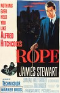 |
2571.
Rope
Release Date:
September 25, 1948
Two young men strangle their "inferior" classmate, hide his body in their apartment, and invite his friends and family to a dinner party as a means to challenge the "perfection" of their crime.
|

|
2572.
Breakdown
Release Date:
May 2, 1997
Jeff Taylor (Russell) and his wife Amy (Quinlan) are headed toward a new life in California when their car's engine dies on a remote highway. Amy accepts a ride from a helpful trucker (Walsh) while Jeff waits with the car. But when Jeff shows up at the agreed rendezvous, he finds his wife's not there. The locals aren't talking; the police aren't much help. With no one to turn to, Jeff battles his worst fears and begins a desperate, danger-ridden search to find Amy -- before it's too late! (Paramount Pictures)
|

|
2573.
Richard Linklater: Dream Is Destiny
Release Date:
August 5, 2016
One of the foremost American filmmakers of our time, Richard Linklater achieved cult immortality with the ‘90s classic Dazed and Confused, won critical respect for the sublime Before trilogy, and redefined cinematic storytelling with the groundbreaking Boyhood. But along the way, the director’s unconventional working methods and fierce independence have frequently put him at odds with the industry. Through interviews with both the filmmaker and many of his closest collaborators, this revealing profile traces Linklater’s life and work—from the DIY landmark Slacker to his latest comedy Everybody Wants Some!!—shedding light on how a creative visionary carved out a one-of-a-kind career unbeholden to the Hollywood machine. [IFC Films]
|

|
2574.
A Borrowed Identity
Release Date:
June 26, 2015
Gifted Eyad (Tawfeek Barhom), a Palestinian Israeli boy, is given the chance to go to a prestigious Jewish boarding school in Jerusalem. As he desperately tries to fit in with his Jewish schoolmates and within Israeli society, Eyad develops a friendship with another outsider, Jonathan (Michael Moshonov) a boy suffering from muscular dystrophy, and gradually becomes part of the home Jonathan shares with his mother, Edna (Yael Abecassis). After falling in love with Naomi (Daniel Kitsis), a Jewish girl, he leaves school when their relationship is uncovered, and he discovers that he will have to sacrifice his identity in order to be accepted. Faced with a choice, Eyad will have to make a decision that will change his life forever. [Strand Releasing]
|
|
|
2575.
Mea Maxima Culpa: Silence in the House of God
Release Date:
November 16, 2012
Alex Gibney examines the charged issue of pedophilia in the Catholic Church, following a trail from the first known protest against clerical sexual abuse in the United States and all the way to the Vatican.
|

|
2576.
Battle of the Sexes
Release Date:
September 22, 2017
The electrifying 1973 tennis match between World number one Billie Jean King (Emma Stone) and ex-champ and serial hustler Bobby Riggs (Steve Carell) was billed as The Battle of the Sexes and became one of the most watched televised sports events of all time. The match caught the zeitgeist and sparked a global conversation on gender equality, spurring on the feminist movement. Trapped in the media glare, King and Riggs were on opposite sides of a binary argument, but off-court each was fighting more personal and complex battles. With a supportive husband urging her to fight the Establishment for equal pay, the fiercely private King was also struggling to come to terms with her own sexuality, while Riggs gambled his legacy and reputation in a bid to relive the glories of his past. Together, Billie and Bobby served up a cultural spectacle that resonated far beyond the tennis courts and animated the discussions between men and women in bedrooms and boardrooms around the world. [Fox Searchlight]
|
2577.
River's Edge
Release Date:
May 8, 1987
A high school slacker commits a shocking act and proceeds to let his friends in on the secret. However, the friends' reaction is almost as ambiguous and perplexing as the crime itself.
|
|
2578.
Mission: Impossible - Ghost Protocol
Release Date:
December 16, 2011
Blamed for the terrorist bombing of the Kremlin, IMF operative Ethan Hunt is disavowed along with the rest of the agency when the President initiates "Ghost Protocol". Left without any resources or backup, Ethan must find a way to clear his agency's name and prevent another attack. To complicate matters further, Ethan is forced to embark on this mission with a team of fellow IMF fugitives whose personal motives he does not fully know. [Paramount Pictures]
|
|

|
2579.
Cold in July
Release Date:
May 23, 2014
How can a split-second decision change your life? While investigating noises in his house one balmy Texas night in 1989, Richard Dane puts a bullet in the brain of a low-life burglar, Freddy Russell. Although he’s hailed as a small-town hero, Dane soon finds himself fearing for his family’s safety when Freddy’s ex-con father, Ben, rolls into town; hell-bent on revenge. However, not all is as it seems. Shortly after Dane kills the home intruder, his life begins to unravel into a dark underworld of corruption and violence. Twists and turns continue to pile up as the film reaches its inevitable destination: a gore-soaked dead end. [IFC Films]
|
2580.
Palio
Release Date:
November 6, 2015
Twice a year the Italian city of Siena goes crazy for the oldest horse race in the world: the Palio. Not your average race: strategy, bribery and corruption play as much a part as the skill of the riders. Horses are allocated by lot four days prior to the race. This is when the madness truly begins. In the eye of the storm stand the jockeys. Loved and loathed by the districts they represent, they forge alliances and make deals promising large cash sums to try and get the best start. Legendary rider Gigi Bruschelli has won 13 Palios in 16 years and is accused by his critics of monopolizing the race. He works the system, paying off younger jockeys and fixing the race with average horses. Two races away from beating the world record, Bruschelli will do anything to win. But one jockey stands in his way, his former trainee, a handsome young Sardinian, Giovanni Atzeni, who is quietly determined to challenge his old mentor. Less interested in bribes and collusion, he rides for the love of the race.
|
|

|
2581.
Layer Cake
Release Date:
May 13, 2005
A riveting thriller set in the drug underworld of the UK. (Sony Pictures Classics)
|

|
2582.
Ray
Release Date:
October 29, 2004
Ray is the never-before-told, musical biographical drama of American legend Ray Charles. Featuring Jamie Foxx in the central role, Ray follows the inspiring story of a one-of-a-kind genius. (Universal)
|

|
2583.
The Company
Release Date:
December 25, 2003
This ensemble drama about the life of a company of ballet dancers focuses on a young dancer (Campbell) on the verge of becoming a principal dancer.
|
2584.
The Widow of Saint-Pierre
Release Date:
February 23, 2001
An emotionally-charged romantic epic about an extraordinary woman poised between two extraordinary men at a pivotal moment in time. Set in 1850 on the desolate and intensely beautiful island of Saint-Pierre, a remote French territory off the coast of Newfoundland, the film is a powerful and provocative examination of grand passions and their consequences. (Lions Gate Films)
|
|

|
2585.
Mask
Release Date:
March 22, 1985
A teenager with a massive facial skull deformity and biker gang mother attempt to live as normal a life as possible under the circumstances.
|

|
2586.
Mr. Smith Goes to Washington
Release Date:
October 19, 1939
A naive man (Jimmie Stewart) is appointed to fill a vacancy in the United States Senate. His plans promptly collide with political corruption, but he doesn't back down.
|
| 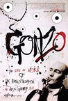 |
2587.
Gonzo: The Life and Work of Dr. Hunter S. Thompson
Release Date:
July 4, 2008
From Oscar-winning director Alex Gibney and producer Graydon Carter comes a probing look into the uncanny life of national treasure and gonzo journalism inventor Dr. Hunter S. Thompson. A fast-moving, wildly entertaining documentary with an iconic soundtrack, the film addresses the major touchstones in Thompson's life--his intense and ill-fated relationship with the Hells Angels, his near-successful bid for the office of sheriff in Aspen in 1970, the notorious story behind the landmark Fear and Loathing in Las Vegas, his deep involvement in Senator George McGovern's 1972 presidential campaign, and much more. Narrated by Johnny Depp. (Magnolia Pictures)
|

|
2588.
Mr. & Mrs. Bridge
Release Date:
November 23, 1990
Set after World War I, India and Walter Bridge (Joanne Woodward and Paul Newman) find their values clashing with their three children.
|

|
2589.
Three Monkeys
Release Date:
May 1, 2009
Three Monkeys tells a twisty, noirish tale that opens with an ambitious politician fleeing a hit-and-run accident. Afraid of hurting his election chances, he pays off his chauffeur Eyüp to take the rap. The film concerns the effects of this devil’s bargain on Eyüp’s family as simmering tensions and sexual intrigue wreak havoc in a household already haunted by hidden ghosts. (Zeitgeist Films)
|

|
2590.
The Long Walk Home
Release Date:
December 21, 1990
Two women, black and white, in 1955 Montgomery Alabama, must decide what they are going to do in response to the famous bus boycott lead by Martin Luther King.
|

|
2591.
The Camden 28
Release Date:
July 27, 2007
In the early-morning hours of Sunday, August 22, 1971, FBI Director J. Edgar Hoover and Attorney General John Mitchell announced that FBI agents had arrested 20 antiwar activists in and near a draft board office in Camden, New Jersey. Five days later, Mitchell made public the indictment of these individuals and included eight others who were linked to the break-in. The major charges against the group were conspiracy to remove and destroy files from the draft board, FBI office, and the Army Intelligence office; destruction of government property and interfering with the Selective Service system. If convicted, some of the indicted faced up to 47 years in federal prison. The men and women arrested that summer of ’71 in Camden called themselves “America’s conscience.” The government called them the Camden 28. The surprise arrest and unorthodox trial of the Camden 28 is a story of friendship and betrayal played out against the backdrop of one of the most turbulent periods in recent American history.
(ECC Media)
|

|
2592.
The 40 Year Old Virgin
Release Date:
August 19, 2005
A comedic take on a sweet-natured but middle-aged virgin who, through the well-meaning but misguided efforts of his co-workers, begins an unforgettable educational journey toward the goal of finally 'doing it.' (Universal)
|

|
2593.
In This Corner of the World
Release Date:
August 11, 2017
The award-winning story of In This Corner of the World follows a young lady named Suzu Urano, who in 1944 moves to the small town of Kure in Hiroshima to live with her husband’s family. Suzu’s life is thrown into chaos when her town is bombed during World War II. Her perseverance and courage underpin this heart-warming and inspirational tale of the everyday challenges faced by the Japanese in the midst of a violent, war-torn country. This beautiful yet poignant tale shows that even in the face of adversity and loss, people can come together and rebuild their lives. [Funimation Films]
|

|
2594.
A Royal Affair
Release Date:
November 9, 2012
A Royal Affair is the true story of an ordinary man who wins the queen's heart and starts a revolution. Centering on the intriguing love triangle between the ever more insane Danish King Christian VII (Mikkel Boe Følsgaard), the royal physician who is a man of enlightenment and idealism Struensee and the young but strong Queen Caroline Mathilda, A Royal Affair is the gripping tale of brave idealists who risk everything in their pursuit of freedom for their people… Above all it is the story of a passionate and forbidden romance that changed an entire nation. (Magnolia Pictures)
|

|
2595.
Herman's House
Release Date:
April 19, 2013
The injustice of solitary confinement and the transformative power of art are explored in Herman’s House, a feature documentary that follows the unlikely friendship between Jackie Sumell, a New York artist, and Herman Wallace, one of America’s most famous inmates, as they collaborate on an acclaimed art project. [First Run Features]
|
2596.
Trilogy: The Weeping Meadow
Release Date:
September 14, 2005
The film, the first of a projected trilogy, traces the history of Greece in the 20th century through the story of the relationship between a man and a woman over decades. Part one ends with the Greek civil war after World War II.
|
|
|
|
2597.
The Cats of Mirikitani
Release Date:
March 2, 2007
This documentary is an intimate exploration of the lingering wounds of war and the healing power of art. The film is a heart-warming affirmation of humanity that will appeal to all lovers of peace, art, and cats. (Corporation for Public Broadcasting)
|

|
2598.
The Puffy Chair
Release Date:
June 2, 2006
The story of three very different people and a giant purple puffy chair in a too-small van. -- and one of them has to go before the trip's end. (Roadside Attraction)
|
2599.
Attenberg
Release Date:
March 9, 2012
Part of the new wave of Greek cinema, Attenberg is an offbeat coming-of-age film. 23-year-old Marina is living in a small, factory town by the sea where her once-visionary architect father, has returned to die. Finding the human species foreign, she keeps her distance, choosing to observe mankind through Sir David Attenborough’s mammal documentaries and the songs of Suicide. While preparing for her father’s impending death, Marina discovers her own sexuality through lessons from her only friend, Bella, and a visiting engineer. Equal parts abstract theater and melodrama, Attenberg sincerely and humorously navigates the defining moments in life. (Strand Releasing)
|
|
| 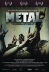 |
2600.
Metal: A Headbanger's Journey
Release Date:
April 14, 2006
Sam Dunn is a 30-year old anthropologist. He's also a lifelong metal fan. After years of studying diverse cultures, Sam turns his academic eye a little closer to home and embarks on an epic journey into the heart of heavy metal. His mission: to try and figure out why metal music is consistently stereotyped, dismissed and condemned, even while the tribe that loves it stubbornly holds its ground - spreading the word, keeping the faith and adopting the style and attitudes that go way beyond the music.
|